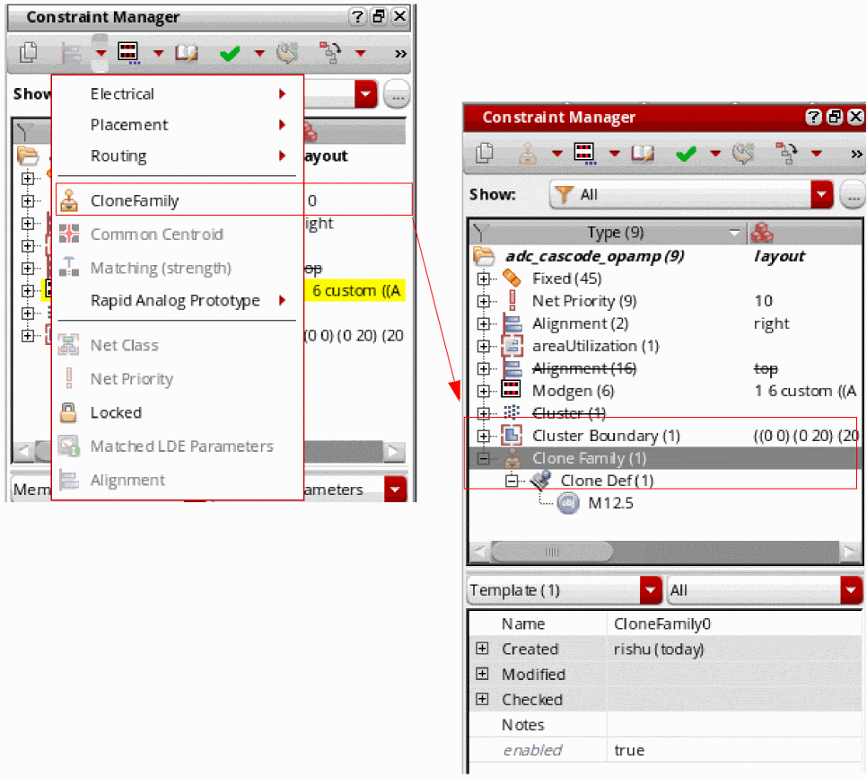

Instance Cloning Using a Clone Family Constraint
A Clone Family constraint represents a synchronous clone family, which consists of two or more Clone Defs, where a Clone Def is an ordered list of bound instances that are contained in a clone.
In general, a Clone Family constraint can be represented by the illustration below:
- Using the Constraint Manager to Generate the Clone Family Constraint
- Using the Generate Clones Form to Generate the Clone Family Constraint
- Using Iterated Instances to Generate the Clone Family Constraint
- Using Mfactored Instances to Generate the Clone Family Constraint
If a Clone Family constraint already exists in the schematic, the constraint is transferred to the layout Constraint Manager when the Generate All From Source
Using the Constraint Manager to Generate the Clone Family Constraint
To add a Clone Family constraint using the Constraint Manager:
- In the schematic or layout canvas, select the instances to be added to the constraint and choose the cloneFamily option in the Constraint Creation menu in Constraint Manager.
A new Clone Family constraint is added to the Constraint Manager and the selected instances are added to the constraint as members of the Clone Def associated with the constraint.
-
If the same instances end up being in two Clone Family constraints, the new Clone Family constraint is not created. For example, if a Clone Family constraint comprises instances
IM0andIM1, Layout XL does not allow creating another Clone Family constraint that will contain these two instances. -
If the instances selected for creating a Clone Family constraint contain any unbound instances, the unbound instances are added to the Clone Def that is generated.

You can also use the Constraint Manager to add new clones to an existing clone family. To do this, use the Add Clone option in the shortcut menu of the selected Clone Family constraint.
To delete an existing Clone Family constraint or a Clone Def, select the Delete option in the associated shortcut menu. Deleting a clone from a Clone Family constraint does not desynchronize the clone family.
Using the Generate Clones Form to Generate the Clone Family Constraint
In the layout view, the Generate Clones form provides the following options to generate and update the Clone Family constraint:
-
Search – Constraint Only
Confines the clone target search to the Clone Family constraint within the selected search area—schematic or layout. See Constraint Only.
Environment variable: cloningSearchInConstraintOnly -
Create – Update Constraint
Depending on what the clone source includes, the option creates a new Clone Family constraint, adds a new Clone Def to an existing constraint, or leaves the existing constraint unaltered. See Update Constraint.
Environment variable: cloningUpdateConstraint
Constraint Only
Constraint Only searches for matching target structures only within the other Clone Defs that belong to the same Clone Family constraint as the source. The option is enabled only when the clone source belongs to a Clone Def. The Clone Defs found during the search are ordered in the same manner as they exist in the constraint.
If Constraint Only is deselected, the clone target search is first conducted within the source Clone Family constraint, followed by a search within the remaining clone target search space.
If the clone source devices are not connected together, but belong to a Clone Def, the Constraint Only option is automatically selected, but disabled to prevent any manual change in state. In this case, the regular clone search cannot be performed because that requires the clone source devices to be connected. Therefore, only other Clone Defs from the Clone Family constraint will be listed as clone targets.
Listed below are some conditions that determine whether a clone source can be considered as valid and what determines if a Clone Def can be found as a clone target:
- If a Clone Family constraint is already present in the layout Constraint Manager, for the clone source to be considered valid, if an instance from the clone source belongs to a Clone Def, all the bound instances in the clone source should exactly match the Clone Def instances. The clone source is rejected if it has either less or more bound instances compared to those in the source Clone Def. In addition, the clone source can include shapes and/or ignored instances.
- If the clone source is a perfect Clone Def, instances that are members of another Clone Family constraint are not considered as clone targets.
Let us now consider some case scenarios that illustrate the conditions in which a clone source is considered valid. Let us assume that the Clone Def for these cases comprises instances I1, I2, and I3.
Scenario 1: Clone source consists of instances I1, I2, and I3, and the instances are interconnected.
The clone source is considered valid as it exactly matches the Clone Def. The clone search will find other Clone Defs from the same clone family but not the Clone Defs from other clone families.
Scenario 2: Clone source consists of instances I1, I2, and I3, but the instances are not interconnected.
Search option Constraint Only is automatically selected and grayed out. Only the instances in the other Clone Defs belonging to the same Clone Family constraint are considered as candidates.
In this case, the Exact Connectivity option is deselected and grayed out because an exact connectivity search cannot be triggered on instances that are not interconnected.
Scenario 3: Clone source consists of instances I1, I2, I3, and I4 – the clone source contains an additional instance compared to the Clone Def.
In this case, the clone source is rejected and a message displays suggesting that the clone source must be an exact match of the Clone Def for it to be considered valid.
To use the clone source anyway, remove or disable the associated Clone Family constraint in the Constraint Manager and trigger the clone search again.
Scenario 4: Clone source consists of I1 and I2 – the clone source has one less instance compared to the Clone Def.
In this case, the clone source is rejected and a message displays suggesting that the clone source must be an exact match of the Clone Def for it to be considered valid.
To use the clone source anyway, remove or disable the associated Clone Family constraint in the Constraint Manager and trigger the clone search again.
Update Constraint
If the Clone Family constraint is not already present for the selected instances, Update Constraint creates a new Clone Family constraint and the associated Clone Def in the Constraint Manager, based on the selected synchronous clone figGroups. If a Clone Family constraint already exists, Update Constraint either leaves the constraint as is, or adds a new Clone Def, if appropriate.
The option is available even if the clone source does not belong to a Clone Def.
By default, Update Constraint is deselected. Therefore, no constraints are created or updated unless the option is selected.
If Update Constraint is selected and:
- The clone source does not belong to a Clone Def, a new constraint is created in the layout Constraint Manager that comprises the clone source and the clone target(s).
- The clone source belongs to a Clone Def, no update is made to the Clone Family constraint, if the clone found is already part of a Clone Family constraint. Also, no new Clone Family constraint is created. But, if the clone found does not belong to a Clone Family constraint, the constraint is updated. A new Clone Def is added to the clone source Clone Family constraint in the layout Constraint Manager.
Using Iterated Instances to Generate the Clone Family Constraint
When the instances selected for generating a Clone Family constraint are iterated instances, the Constraint Member Select form displays to confirm which instances to use for the constraint. If the selected instances belong to a Clone Def, the instances in the form are sorted according to the iterated instance order. For example, in a Clone Def comprising instances IM14.1 to IM14.4, IM14.1 is the first instance in the Clone Def.
Using Mfactored Instances to Generate the Clone Family Constraint
An mfactored instance is considered a single instance in the schematic view. Therefore, the instances are not split in the schematic Constraint Manager.
Related Topics
Clone Constraint (RAK)
Return to top